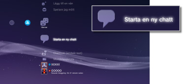
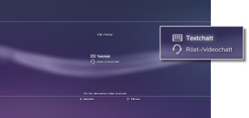
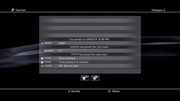

Starta eller avsluta en textchatt
För att använda denna funktion måste du kanske uppdatera din systemprogramvara.
Du kan textchatta med personer i listan över vänner.
Starta en textchatt
1. |
Välj |
|---|---|
|
 |
|
2. |
Välj |
|
 |
|
3. |
Ange ett namn för textchattrummet och välj därefter [OK]. |
4. |
Välj de vänner du vill bjuda in till chatten och välj därefter [OK]. |
|
 |
 (Starta en ny chatt).
(Starta en ny chatt). (Textchatt).
(Textchatt).Tips!
- Du måste vara inloggad på PSNSM för att textchatta.
- En chattinbjudan skickas inte vid textchatt.
- Upp till 16 personer kan ansluta till chattrummet.
- Funktionen textchatt kan inte användas om användningsbegränsningar har angetts. Mer information om inställningar av föräldrakontroll hittar du under [Om XMB™-menyn] > [Användning av funktionen för föräldrakontroll] i denna handbok.
Ansluta ett textchattrum
Om du är inbjuden till en textchatt, visas ett meddelande i övre högra hörnet av skärmen. Välj  (Chattrum (endast text)) under
(Chattrum (endast text)) under  (Vänner), och välj sedan det chattrum du vill ansluta till.
(Vänner), och välj sedan det chattrum du vill ansluta till.
Tips!
- Om [Visa inte] är inställt för [Meddelanden] under
 (Inställningar) >
(Inställningar) >  (Systeminställningar), visas inte meddelanden.
(Systeminställningar), visas inte meddelanden. - För de flesta speltitlar kan du ansluta till en textchatt under spelets gång. Tryck på PS-knappen på den trådlösa handkontrollen och välj sedan det chattrum du vill ansluta till under (Vänner) > (Chattrum (endast text)). Tryck på PS-knappen för att återgå till spelskärmen.
- Du kan ansluta till upp till tre chattrum samtidigt. Om du ansluter till ett fjärde chattrum kommer du automatiskt att lämna det chattrum du först anslöt till.
- Upp till 20 chattrum kan visas för (Chattrum (endast text)). När det finns fler än 20 chattrum kommer de äldsta chattrummen automatiskt att raderas när nya chattrum öppnas.
Lämna ett chattrum
Tryck på  -knappen för att stänga textchattskärmen. Välj det chattrum du vill lämna, tryck på
-knappen för att stänga textchattskärmen. Välj det chattrum du vill lämna, tryck på  -knappen och välj därefter [Lämna] i alternativmenyn.
-knappen och välj därefter [Lämna] i alternativmenyn.
Tips!
Om du stänger av PS3™-systemet eller loggar ut från PSNSM, lämnar du automatiskt chattrummet. Om du ansluter till ett chattrum igen efter att du lämnat det, visas inte de chattinlägg som skickats när du var borta.
Radera ett chattrum
Välj det chattrum du vill radera, tryck på -knappen och välj därefter [Radera] i alternativmenyn.
Använda kontrollpanelen
Du kan utföra följande funktioner genom att använda kontrollpanelen i textchattskärmen.
| Bjud in en vän | Bjuda in en vän att ansluta till ett textchattrum | |
|---|---|---|
 |
Deltagarlista | Visa en lista över personer som deltar i chattrummet |